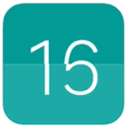

MIUI9
快如闪电|理念视频传送门
真正的一步直达
在MIUI9系统任意应用中，你可以通过长按操作，触发系统对长按内容的只能分析，"传送门"会把相关的信息即刻传送给你，
极高的提高了跨应用获取信息的效率
※"传送门"是MIUI实验室功能，需要用户主动开启
长按直达，即按即得
极简的开启方式，一个长按即可开启传送门，你要的内容便跃然屏上，即按即得。
长按得到的，比你想要的更多
“传送门”为各类信息提供特定的直达服务，基于对长按内容的分析，智能化匹配如人物百科、商家点评、商品链接等各类信息。

人物
影视
图书
商户
地理位置
航班
车次
链接
进阶选词搜索
甚至，系统会将你长按的内容进行智能分词，你还可以进一步选词搜索，快速搜索个性化内容。

快速查找照片
自拍或合影，哭还是笑，证件还是文字，统统搞定
“查找照片”是MIUI实验室功能，需要用户在实验室中申请开通内测时间、地点、人物皆可搜索
在MIUI 9中查找照片十分快速高效。得益于先进的机器学习和图像识别技术，你可以基于时间、地点、人物、事物等对照片进行快速查找。
深度查找
如果人物照片很多，MIUI 9会自动基于地点或节日整理出子相册，你可以在搜索“我和老婆”后，进一步快速查找和浏览。


证件自动归档
身份证、名片、银行卡、护照，所有证件自动归档，想用即搜，即搜即得。

身份证
名片
银行卡
护照

截图文字也能搜
小贱曾说国足赢了韩国就裸奔，现在不认账，我要翻出聊天截图来，立即搜索“裸奔”，截图证据就找到了。
信息助手
聚合手机上有价值的信息和功能
“信息助手”中的每一张卡片都发挥了系统的整合能力。你可以快速启用深藏在应用内的高频功能， 还可以更快速地获取到分散在应用中的同类信息，让步骤化繁为简，使信息聚合统一，只为助你快人一步。
常用高频功能，一键打开
“快捷功能”聚合了常用应用内高频功能，你可以在信息助手中一步启用。比如你可以快速打开支付宝付款码。
- 扫一扫
- 付款码
- 公交卡
- 科学计算
- 新建便签
- 更多
散落四处的收藏，集中查看
“我的收藏”将不同应用中的收藏内容整理聚合，当你想查找使用收藏信息时， 无需再进入不同应用去查找，在信息助手中就能快捷的查看和使用。
行程预订信息，井井有条
“预订助手”聚合火车票、飞机票、电影票和酒店预订信息，你可以快速了解近期行程安排，所有行程信息一个不错过。
其中飞机票信息，还支持行程提醒、在线值机和航班动态查询服务。
※在线值机和航班动态查询服务由飞常准提供，会在MIUI 9后续版本中升级呈现
为你聚合的，都是日常所需
- 快捷功能
- 我的收藏
- 日历行程
- 行程预定
- 我的快递
- 随手记事
- 运动计步
- 我的支出
- 股票行情
- 足球篮球
- 打车出行
- 通勤路况
闪电系统
可能是最快的安卓操作系统
应用启动速度快
应用启动速度，是对系统爆发力的考核。MIUI 9做了系统级的应用启动加速优化， 当你点击应用时，便会感受到令人惊叹的启动响应速度。 无论是系统应用，还是第三方应用和游戏，你都会体验到快如闪电的应用启动速度。

玩游戏和上网快
在你玩手机时，手机系统中往往同时在运行多个应用和服务，应用相互之间会抢占系统资源，导致系统变卡变慢。 以网络带宽为例：当手机在后台下载应用或视频时，就会影响前台使用体验。新闻加载变慢，游戏延迟增加。MIUI 9的动态资源分配技术，能够优先满足用户前台应用的资源需求，确保运行顺畅。无论后台如何波动，前台使用始终流畅快速。
日常综合使用稳定流畅
手机操作系统长期使用过程中，会因各种问题导致日常综合使用的卡顿现象。MIUI 9全面分析了手机系统卡、慢、热的原因， 综合采用多达十几项的系统优化来保证系统的综合流畅度。全面优化让系统时刻保持最佳状态，确保日常使用始终稳定流畅。
系统性能优化黑科技
MIUI 9不仅应用启动速度快、玩游戏和上网快，而且日常综合使用稳定流畅。 快如闪电般的操作系统源于MIUI 9综合采用多达十几项的系统优化黑科技

畅快体验
源于对全局效率的打磨
动态图标
在你打开手机后会感受到MIUI 9细节设计的轻快和灵动，令人耳目一新的动态图标，赋予了整个系统生命力。
每一次应用的关闭过程，都像是一次精致的
小别离，期待着下一次的见面。

- 

分屏
MIUI 9提供了易用的分屏功能，你可以一边看比赛直播一边微信聊天；也可以一边看剧一边刷淘宝。
新桌面编辑
得益于为MIUI 9重新设计的桌面编辑功能，双指一捏，便可更快
速地整理桌面应用图标，排布小工具以及批量删除应用。
通知过滤
基于“小米大脑”的深度学习推荐算法，MIUI 9的通知栏对用户收
到的通知进行智能过滤，个性化收纳对你不重要的通知，让你专
注于真正重要的信息。
新短信
MIUI 9全新的短信按时间分组，使得浏览管理短信更高效，也
使批量已读或删除通知类短信更快捷。同时，新增验证码分组
功能，智能聚合全部验证码短信。
静音模式
全新设计的MIUI 9静音模式，在你需要专注时提供有力保障。现在通过音量控制面板， 你可以快速开启静音或勿扰，并设定自动退出的时间，非常简单便捷。